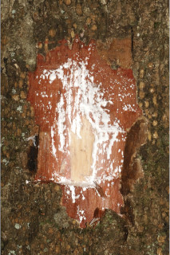
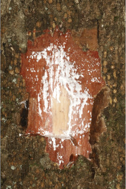
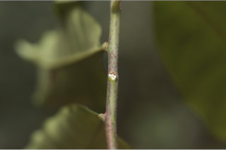
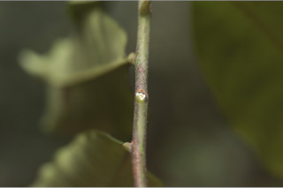

Tall, buttressed trees, up to 35 m tall.
35 ಮೀ ಎತ್ತರದವರೆಗಿನ ಆನಿಕೆಯುಳ್ಳ ಮರಗಳು.
Tall, buttressed trees, up to 35 m tall.
மரங்கள், தாங்கு வேர்களுடையவை (பட்ரஸ்டு), 35 மீ. உயரம் வரை வளரக்கூடியது.
Bark smooth, lenticellate, irregularly flaky when mature; blaze reddish brown.
ತೊಗಟೆ ನಯವಾಗಿದ್ದು,ವಾಯುವಿನಿಮಯ ಬೆಂಡು ರಂಧ್ರಗಳ ಸಮೇತವಿರುತ್ತದೆ,ಬಲಿತಾಗ ಅನಿಯತವಾಗಿ ಚಕ್ಕೆಯೇಳುವ ಮಾದರಿಯಲ್ಲಿರುತ್ತದೆ;ಕಚ್ಚು ಮಾಡಿದ ಜಾಗ ಕೆಂಪು ಮಿಶ್ರಿತ ಕಂದು.
Bark smooth, lenticellate, irregularly flaky when mature; blaze reddish brown.
மரத்தின் பட்டை வழுவழுப்பானது, பட்டைத்துளைகள் (லெண்டிசெல்லேட்) உடையது, முதிரும் போது ஒழுங்கற்ற செதில்களாக உதிருபவை; உள்பட்டை சிவப்பு-ப்ரவுன் நிறமானது .
Branches with architecture of “Aubreville_model”; young branchlets terete, puberulent, later glabrous.
ಕಿರುಕೊಂಬೆಗಳು “ಆಬ್ರೆವಿಲ್ಲೆ” ಮಾದರಿಯಲ್ಲಿರುತ್ತದೆ;ಎಳೆಯ ಕಿರುಕೊಂಬೆಗಳು ದುಂಡಾಗಿದ್ದು,ಎಳೆಯದಾಗಿದ್ದಾಗ ಸೂಕ್ಷ್ಮ ಮೃದು ತುಪ್ಪಳದಿಂದ ಕೂಡಿದ್ದು ನಂತರ ರೋಮರಹಿತವಾಗುತ್ತವೆ.
Branches with architecture of “Aubreville_model”; young branchlets terete, puberulent, later glabrous.
கிளைகள் “ஆப்ரவில் மாதிரி” முறையில் கிளைக்கும்; சிறியநுனிக்கிளைகள் குறுக்குவெட்டுத் தோற்றத்தில் வளையமானது, நுண்ணிய உரோமங்களுடையது, முதிரும் போது உரோமங்களற்றது.
Latex white, profuse.
ಸಸ್ಯ ಕ್ಷೀರ ಹಾಲಿನ ಬಿಳಿ ಬಣ್ಣ ಹೊಂದಿದ್ದು ವಿಫುಲವಾಗಿರುತ್ತದೆ.
Latex white, profuse.
வெள்ளை நிற பால் அதிகளவு சுரக்கிறது.
Leaves simple, alternate, spiral; stipule small, caducous and leaving scar; petiole 1.5- 3 cm long, planoconvex in cross section, minutely puberulous when young; lamina 7-15 x 3-5 cm, elliptic-obovate or elliptic, apex caudate to acuminate with blunt tip, Leaves simple, alternate, spiral; stipule small, caducous and leaving scar; petiole 1.5- 3 cm long, planoconvex in cross section, minutely puberulous when young; lamina 7-15 x 3-5 cm, elliptic-obovate or elliptic, apex caudate to acuminate with blunt tip, base cuneate to attenuate, margin undulate, coriaceous, glabrous; midrib flat above; secondary nerves 8-12 pairs, slender; tertiary nerves reticulo-percurrent.
ಎಲೆಗಳು ಸರಳವಾಗಿದ್ದು ಪರ್ಯಾಯ ಮತ್ತು ಸುತ್ತು ಜೋಡನಾ ವ್ಯವಸ್ಥೆಯಲ್ಲಿರುತ್ತವೆ; ಕಾವಿನೆಲೆಗಳು ಸಣ್ಣ ಗಾತ್ರದವುಗಳಾಗಿದ್ದು,ಉದುರಿ ಹೋಗುತ್ತವೆ ಮತ್ತು ಗುರುತುಗಳನ್ನು ಉಳಿಸುತ್ತವೆ;ತೊಟ್ಟುಗಳು 1.5 -3 ಸೆಂ.ಮೀ. ಉದ್ದವಿದ್ದು, ಅಡ್ಡ ಸೀಳಿದಾಗ ಸಪಾಟ ಪೀನ ಮಧ್ಯದ ಆಕಾದಲ್ಲಿರುತ್ತವೆ, ಎಳೆಯದಾಗಿದ್ದಾಗ ಸೂಕ್ಷ್ಮ ಮೃದುತುಪ್ಪಳದಿಂದ ಕೂಡಿರುತ್ತದೆ; ಪತ್ರಗಳು 7 -15 X 3 –5 ಸೆಂ.ಮೀ. ಗಾತ್ರ,ಅಂಡವೃತ್ತ-ಬುಗುರಿ ಅಥವಾ ಚತುರಸ್ರದ ಆಕಾರ ಹೊಂದಿದ್ದು, ಮೊಂಡಾಗ್ರವುಳ್ಳ ಬಾಲರೂಪಿಯಿಂದ ಕ್ರಮೇಣ ಚೂಪಾಗುವ ಮಾದರಿಯ ತುದಿ,ಬೆಣೆಯಿಂದ ಒಳಬಾಗಿದ ಮಾದರಿವರೆಗಿನ ಬುಡ, ತರಂಗಿತವಾದ ಅಂಚು, ತೊಗಲನ್ನೋಲುವ ಮೇಲ್ಮೈ ರೋಮರಹಿತವಾಗಿರುತ್ತದೆ; ಮಧ್ಯನಾಳ ಪತ್ರದ ಮೇಲ್ಭಾಗದಲ್ಲಿ ಚಪ್ಪಟೆಯಾಗಿರುತ್ತದೆ; ಎರಡನೇ ದರ್ಜೆಯ ನಾಳಗಳು 8 - 12 ಜೋಡಿಗಳಿದ್ದು ತೆಳುವಾಗಿರುತ್ತವೆ; ಮೂರನೇ ದರ್ಜೆಯ ನಾಳಗಳು ವಿಶಾಲ ಜಾಲ ಬಂಧ ನಾಳ ವಿನ್ಯಾಸದವುಗಳಾಗಿದ್ದು ಎಲೆ ದಿಂಡಿಗೆ ಅಡ್ಡವಾಗಿ ಕೂಡುತ್ತವೆ.
Leaves simple, alternate, spiral; stipule small, caducous and leaving scar; petiole 1.5- 3 cm long, planoconvex in cross section, minutely puberulous when young; lamina 7-15 x 3-5 cm, elliptic-obovate or elliptic, apex caudate to acuminate with blunt tip, Leaves simple, alternate, spiral; stipule small, caducous and leaving scar; petiole 1.5- 3 cm long, planoconvex in cross section, minutely puberulous when young; lamina 7-15 x 3-5 cm, elliptic-obovate or elliptic, apex caudate to acuminate with blunt tip, base cuneate to attenuate, margin undulate, coriaceous, glabrous; midrib flat above; secondary nerves 8-12 pairs, slender; tertiary nerves reticulo-percurrent.
இலைகள் தனித்தவை, மாற்றுஅடுக்கமானவை, சுழல் போன்று அமைந்தவை; இலையடிச்செதில் சிறியவை, எளிதில் உதிரக்கூடியது மற்றும் தழும்புகளை ஏற்படுத்துகின்றன; இலைக்காம்பு 1.5-3 செ.மீ. நீளமானது, குறுக்குவெட்டுத் தோற்றத்தில் பிளேனோகான்வக்ஸ், நுண்ணிய இளம்பருவத்தில் உரோமங்களுடையது; இலை அலகு 7-15 X 3-5 செ.மீ., நீள்வட்டம்-தலைகீழ் முட்டை வடிவானது அல்லது நீள்வட்ட வடிவானது, அலகின் நுனி வால் போன்றது முதல் சிறிது அதிக்கூரியதுடன் அதன் முனை மழுங்கியது, அலகின் தளம் ஆப்பு வடிவானது முதல் அட்டனுவேட், அலகின் விளிம்பு அலை போன்றது, கோரியேசியஸ், உரோமங்களற்றது; மையநரம்பு மேற்புறத்தில் அலகின் பரப்பிற்கு சமமானது; இரண்டாம் நிலை நரம்புகள் 8-12 ஜோடிகள், மெல்லியவை; மூன்றாம் நிலை நரம்புகள் வலைப்பின்னல்-பெர்க்கரண்ட் போன்றவை.
Flowers white, in axillary clusters or in pairs, on long pedicel up to 1.5 cm long; calyx with fulvous appressed hairs.
ಹೂಗಳು ಬಿಳಿ ಬಣ್ಣದಲ್ಲಿದ್ದು ಅಕ್ಷಾಕಂಕುಳಿನಲ್ಲಿನ ಗುಚ್ಛಗಳಲ್ಲಿರುತ್ತವೆ ಅಥವಾ 1.5 ಸೆಂ.ಮೀ. ಉದ್ದದವರೆಗಿನ ತೊಟ್ಟುಗಳ ಮೇಲೆ ಜೋಡಿಯಾಗಿರುತ್ತವೆ;ಪುಷ್ಪಪಾತ್ರೆ ನಸುಗೆಂಪಿನ ಹಳದಿ ಬಣ್ಣದ ಅಪ್ಪು ರೋಮಗಳಿಂದ ಕೂಡಿರುತ್ತದೆ.
Flowers white, in axillary clusters or in pairs, on long pedicel up to 1.5 cm long; calyx with fulvous appressed hairs.
மலர்கள் வெள்ளை நிறமானது, இலைக்கோணங்களில் தொகுப்பாக அல்லது ஜோடியாக அமைந்தவை, மலர்காம்பு 1.5 செ.மீ. நீளமானது; புல்லி இதழ்கள் உரோமங்களுடையது.
Berry, narrow elliptic or ellipsoid to 5 x 2 cm; seed one.
ಬೆರ್ರಿ ಸಂಕುಚಿತ ಅಂಡವೃತ್ತ ಅಥವಾ ಅಂಡವೃತ್ತದ ಆಕಾರದಲ್ಲಿದ್ದು 5X2 ಸೆಂ.ಮೀ. ಉದ್ದವಿರುತ್ತದೆ;ಬೀಜದ ಸಂಖ್ಯೆ 1.
Berry, narrow elliptic or ellipsoid to 5 x 2 cm; seed one.
முழுச்சதைகனி (பெர்ரி), குறுகிய நீள்வட்ட வடிவானது அல்லது நீள்வட்ட வடிவானது, 5 X 2 செ.மீ.; ஒர் விதையுடையது.


 


 
